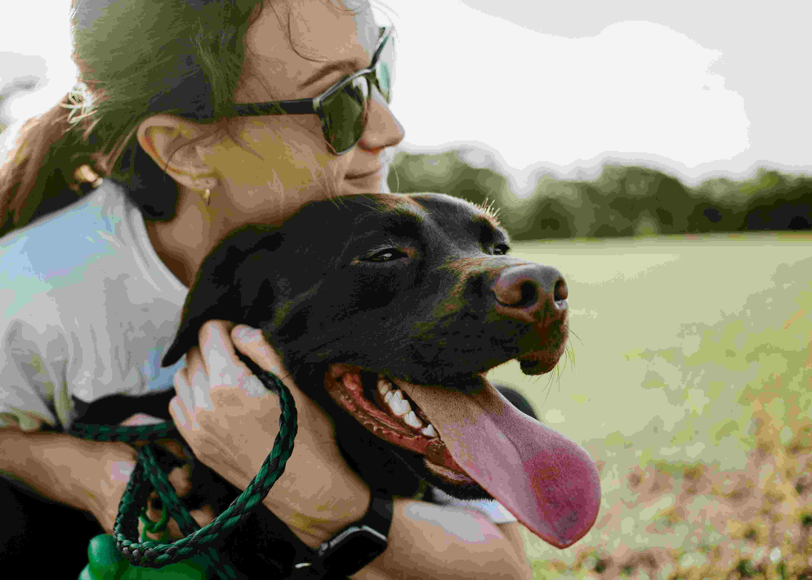
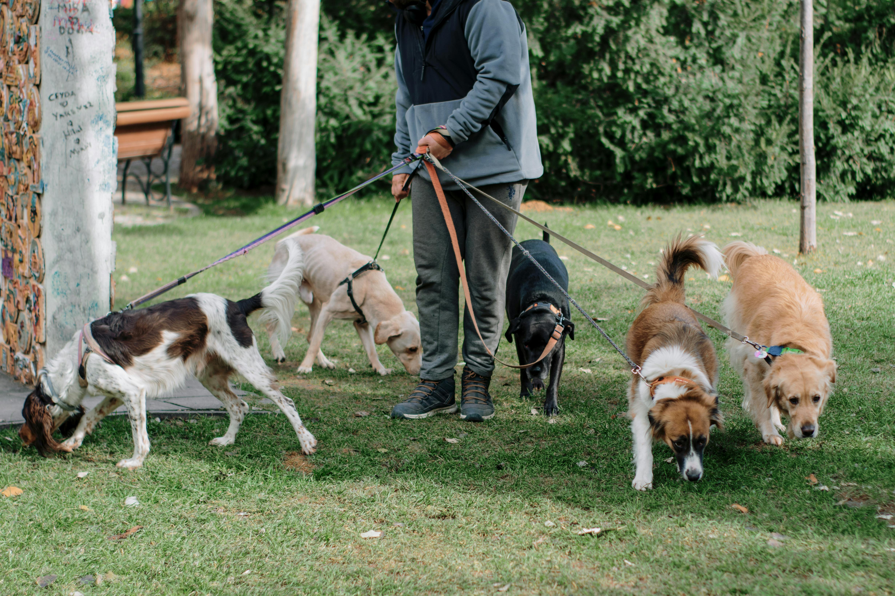

Welcome to the Dog Walking Guide!
Walking your dog is an essential part of their health and happiness. Regular walks provide exercise, mental stimulation, and an opportunity to bond with your furry companion (American Kennel Club, 2023). However, extreme weather conditions can make walks unsafe for certain breeds (ASPCA, 2022).
Use our Dog-Weather Checker to determine whether it’s a good time to walk your dog. Simply input your location and dog’s breed, and we’ll provide a recommendation based on real-time weather data (NOAA, 2023).
Check the Weather Before Walking Your Dog 🐾
